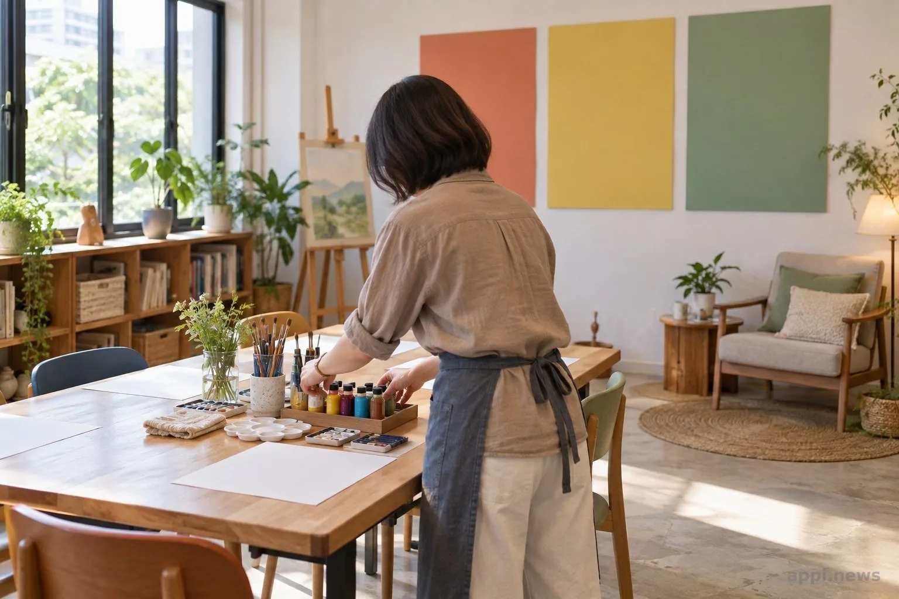
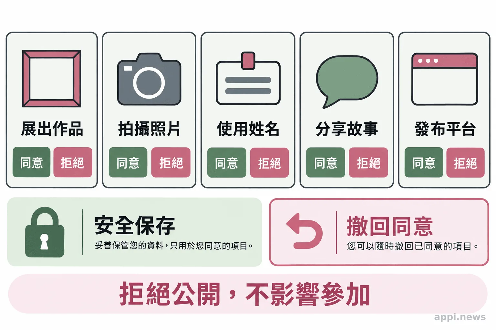
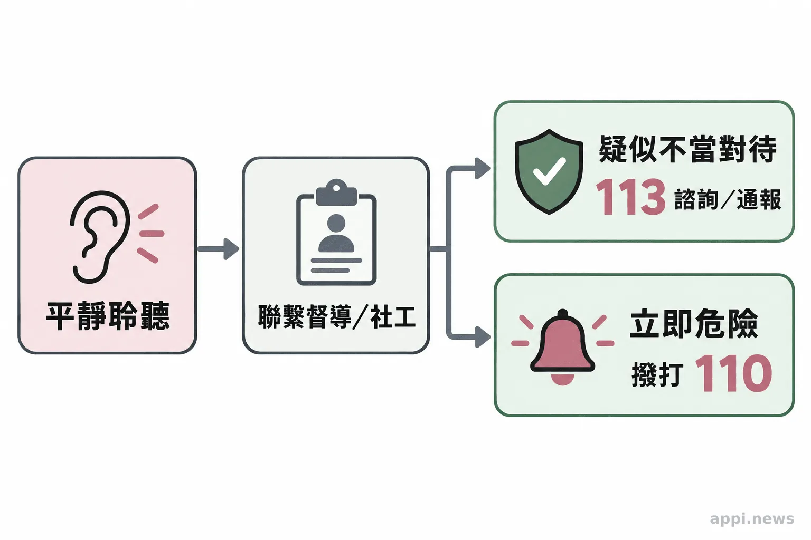

孩子的畫要不要展出？兒少藝術陪伴先談選擇與隱私
社區藝術陪伴可以為孩子提供創作與參與的空間。從課程流程、孩子的選擇、作品隱私到志工轉介，家長與帶領者都能先把界線說清楚。
孩子走進畫室，桌上放著紙和顏料。大人先說明今天會做什麼、作品由誰保管，也告訴孩子可以休息、不畫，或不分享。這些小事，構成社區藝術陪伴的安全起點。對家長、教師和志工來說，課程設計的重點是讓參與有選擇、讓作品有保護，也讓遇到疑慮時知道找誰協助。
兒童與少年、疑似遭受虐待或不當對待的孩子，以及曾經歷創傷或家庭暴力的兒少，都可能參與藝術活動。固定流程和可信任的大人能讓活動更清楚，但藝術陪伴屬於支持性的社區活動，不能取代心理治療、社工服務或兒少保護處遇。每個孩子的需要不同，課程要跟著孩子調整節奏。
先把課程流程說清楚，孩子才知道自己可以怎麼參與
**先安排固定時段、熟悉的帶領者和清楚流程，並說明孩子可以暫停、旁觀或不參加。**可預期的安排讓孩子知道活動怎麼開始、如何收拾，以及需要幫忙時可以找誰。
一堂課開始前，可以帶孩子認識空間、洗手間和休息的位置，說明今天有哪些材料、作品由誰保管、活動結束後如何接送。家長也應知道孩子由誰陪伴，以及遇到狀況如何聯繫。
參與不必等於完成一幅畫。孩子可以自己挑材料和主題，也可以先看別人創作、稍作休息，或不把作品拿給大家看。帶領者提供選項後，留一些時間讓孩子決定；不要用完成度、分享內容或情緒表現評定孩子。

畫作由孩子決定，不能拿來推測經歷
**不能只憑畫作判斷受虐、創傷或心理狀態。**孩子可以選擇畫什麼、要不要說明，帶領者負責陪伴與觀察，不要求孩子重現經歷。
看見特別的圖像時，大人不必急著追問「為什麼畫這個」。可以先問孩子是否想介紹作品；若孩子不想說，就尊重這個選擇。畫作不是調查工具，也不能代替專業評估。相關研究探討的是由專業人員執行的藝術治療或藝術介入，不能直接推論一般社區繪畫課也能治療創傷。
Maddox 等人 2024 年的系統性回顧與統合分析納入 21 項隨機對照試驗，研究創傷經驗後的藝術治療。整體分析中，PTSD 專屬結果未達統計顯著；兒童亞組分析則呈現改善。研究作者也指出介入與研究方法存在差異，仍需要更多試驗和標準化流程。因此，研究可提供專業介入的參考，不能據此推定一般課程有效，也不能用來解讀單一孩子的作品。
如果孩子主動談到安全疑慮，志工應平靜聆聽，不追問案情、不暗示答案、不與疑似行為人對質，也不承諾絕對保密。依機構流程聯繫督導或社工，記錄必要資訊並交由適當人員處理。衛福部說明，113 保護專線全天受理兒少保護等通報或求助諮詢；若有立即人身安全危險，應先撥 110。
展出作品之前，先確認孩子和家長知道用途
**參加課程不等於同意拍照或展出。**公開前應向孩子及適當的法定代理人說明作品、影像、姓名、故事和發布平台各自的用途，分別確認意願，並讓孩子能拒絕或撤回。
孩子可能把畫作當成私密內容。即使作品沒有寫姓名，也可能因學校、地點、家庭故事、制服或照片背景而辨認出作者。機構可逐項確認要不要展示作品、拍攝照片、標示姓名、附上故事，或放到網站與社群平台；不同用途分開詢問，比一張概括同意更清楚。
《兒童及少年福利與權益保障法》第 69 條涉及特定案件兒少身分資訊的公開限制。衛福部也提醒，將受虐兒少的照片或相關資訊放上網，可能侵害隱私並違反法令。展出前要檢查是否能從文字、影像或活動資訊辨識孩子；有疑問就暫緩發布，請機構負責人或相關專業人員確認。拒絕展出不應影響服務，撤回後也要說明已上架或印製內容會如何處理。

志工陪伴孩子，也要知道何時交給專業人員
**志工需要上線前訓練、固定督導和明確的事件回報流程。**志工可以陪伴、觀察與回報；調查、個案評估和保護決策應交由具權責的專業人員。
訓練內容可包括兒少權益、身體與語言界線、接送與單獨相處規則、作品和影像管理，以及遇到疑慮時的聯絡程序。機構要指定督導或社工窗口，讓志工知道何時通報、如何交接紀錄，以及資料由誰保存。作品和服務紀錄應限制存取，不能放進私人群組或未經同意公開分享。
「若有立即人身安全危險，請您先直接撥110報警。」衛生福利部保護服務司
若正在規劃兒少藝術活動，可以邀請社工或兒少保護專業人員一起檢視接送安排、孩子暫停或退出的方式、作品保存與展出同意，以及安全疑慮的轉介流程。把負責人和聯絡方式寫清楚，讓每位志工都能照著同一套程序行動。
台灣微光希望關懷協會的公開活動紀錄收錄兒童藝術陪伴課程與公益展覽。介紹服務時，應聚焦活動形式與公共參與，不從照片或作品推測兒少的個人經歷或心理狀態。

- 固定流程與孩子的選擇權，讓藝術活動的參與方式更清楚。
- 不要求孩子畫出創傷，也不以畫作判斷受虐或心理狀態。
- 公開作品或影像前，分別說明用途並確認孩子與適當法定代理人的意願。
- 志工負責陪伴和回報；疑似兒少不當對待可撥 113，立即危險先撥 110。
常見問題
Q1：藝術陪伴就是藝術治療嗎？
不是。社區藝術陪伴以創作與參與為主；藝術治療屬專業介入，不能把治療研究結果直接套用到一般繪畫課。
Q2：孩子不想畫或不想分享，帶領者可以怎麼做？
尊重孩子的選擇，提供旁觀、休息或稍後加入的方式，不以完成作品或分享內容評價孩子。
Q3：畫裡出現暴力圖像，就代表孩子遭受虐待嗎？
不能單憑圖像判斷受虐或診斷心理狀態。若孩子主動談到安全疑慮，依機構流程聯繫督導或社工。
Q4：家長同意拍照，作品和照片就都能公開嗎？
應先說明作品、照片、姓名、故事與發布平台等用途，也要讓孩子知道可以拒絕或撤回；不同用途應分開確認。
Q5：志工遇到孩子疑似遭受不當對待，該做什麼？
保持平靜，不追問、不調查，也不承諾保密；依流程通知督導或社工。疑似受虐可撥 113，立即危險先撥 110。
參考文獻
- 衛生福利部保護服務司。113 保護專線介紹。https://dep.mohw.gov.tw/dops/cp-1183-6499-105.html
- 衛生福利部社會安全網。發現兒童少年有疑似遭受虐待或不當對待，應該怎麼協助他們？可以上網爆料嗎？https://www.mohw.gov.tw/SS/cp-4530-50101-204.html
- Maddox GA, et al. (2024). On the Effectiveness of Visual Arts Therapy for Traumatic Experiences: A Systematic Review and Meta-Analysis. Clinical Psychology & Psychotherapy. https://pubmed.ncbi.nlm.nih.gov/39120099/
- 台灣微光希望關懷協會。活動集錦。https://www.ghca0101.org/gallery.html
本文同步刊於 appi.news。